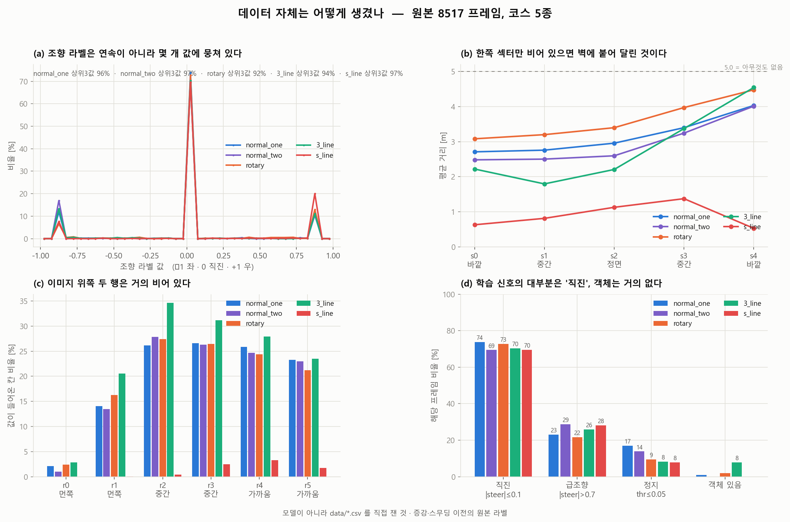
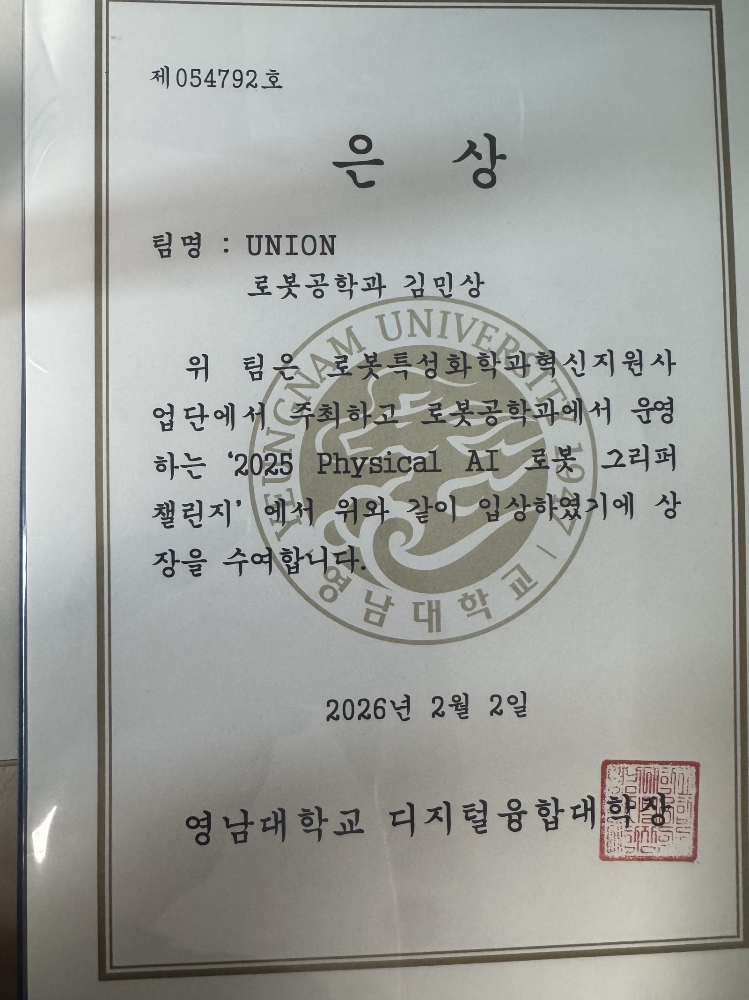
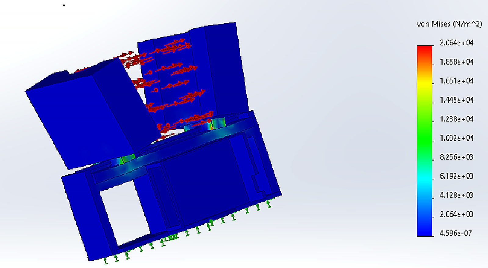
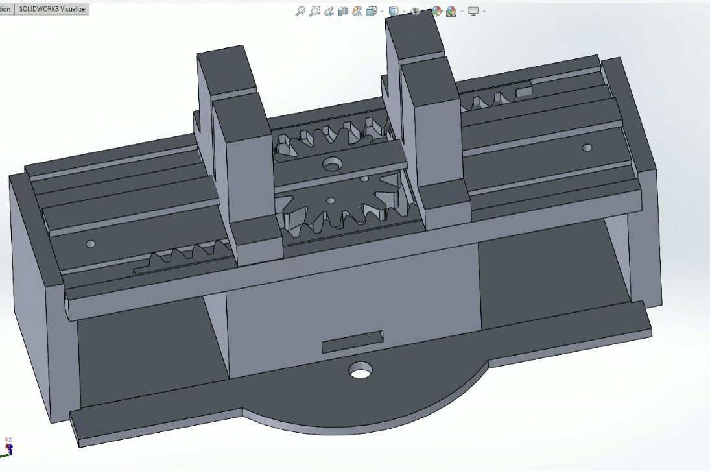
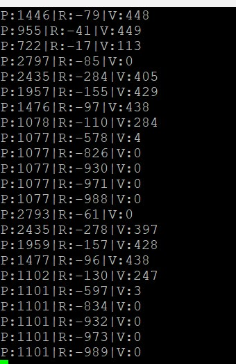

About Me
안녕하세요! 영남대학교 로봇공학과에서 공부하고 있는 김민상입니다.
시간이 날 때면 곡을 씁니다. 곡이 비어 들릴 때 악기를 하나 더 얹을지, 이미 있는 소리를 다듬을지 오래 고민하는 편입니다.
로봇을 만들 때도 같은 고민을 합니다. 센서를 더 달기 전에, 지금 들어오는 데이터가 무엇을 말하고 있는지부터 들여다봅니다.
Humanoid AI
제조 휴머노이드 핵심 AI
도전 : 제조 현장에서 사람과 함께 일하는 휴머노이드의 핵심 AI 개발
과학기술정보통신부·IITP AI Star Fellowship(지역 산학 트랙) 과제에서 김성호 교수님 연구실과 함께, 시뮬레이션에서 학습한 동작을 실제 로봇으로 옮기는 일(sim-to-real)과 사람 곁에서 일하는 로봇의 안전을 맡고 있습니다.
IROC에서 데이터상으로 맞아 보이던 모델이 실제 트랙에서는 다르게 움직였던 경험이, 지금은 휴머노이드에서 같은 질문으로 이어지고 있습니다.
Autonomous Driving
모델은 앞을 보고 멈춘 게 아니었습니다. 직전 스로틀이 0이라서 멈췄습니다.
SKYNET, 같은 장애물 앞의 다른 판단
도전 : 같은 장애물을 보고도 코스에 따라 멈추거나 피하는 자율주행 RC카
이를 위해 오픈소스 모방학습 플래너(e2e-planner)를 엔코더 없는 JetRacer Pro에 올리고, 카메라 입력에 5섹터 LiDAR를 더했습니다. 제가 직접 운전한 주행 데이터를 코스별로 쌓아, 하나의 모델이 코스마다 다른 판단을 배우게 했습니다.
결과 : IROC 2026 2위
Skills : PyTorch, Behavior Cloning, Jetson Orin Nano, Intel RealSense, 2D LiDAR, Python

한 번 멈추면 다시 출발하지 않는 차
도전 : 학습 지표는 정상인데, 실제 트랙에서 한 번 멈추면 다시 출발하지 않는 문제
이를 위해 모델 구조는 그대로 두고, 데이터가 모델에게 무엇을 가르치고 있는지부터 다시 봤습니다. 정지 라벨을 다시 정의해 짧은 정지 72구간을 주행으로 바꾸고, 스로틀 라벨을 모터가 움직이는 범위로 고정했습니다. 검증은 코스별 주행에서 통합 데이터, 주행 중 시나리오 전환 순서로 넓혔습니다.
결과 : 대회장에서 재학습 없이 게인 하나로 속도 조정
Skills : 데이터 전처리·증강, pandas, 분석 도구 제작(matplotlib), OpenCV HSV 전처리
기여 구분 원본: e2e-planner(카메라 기반 모방학습 플래너) · 팀: 정지선 인식 기반 코스 전환 · 본인: 데이터 수집·전처리·증강, LiDAR 확장, HSV 입력 보정, 분석 도구
Robotic Gripper

센서 없이 강체와 연성체를 함께 잡기
도전 : Ø100mm·1kg 원기둥과 스펀지 같은 연성체를 외부 촉각 센서 없이 함께 잡기
이를 위해 6축 로봇 엔드이펙터용 랙-피니언 그리퍼를 설계하고, 다이나믹셀의 부하와 위치 값만으로 접촉을 감지해 유지 전류로 넘어가게 했습니다.
결과 : Physical AI Gripper Challenge 은상 · BOM $150 미만
Skills : SOLIDWORKS, Dynamixel, 전류–위치 제어, 3D 프린팅



FEA로 다시 그린 랙
도전 : 1kg을 들 때 랙에 몰리는 집중 하중
이를 위해 SOLIDWORKS FEA로 응력이 몰리는 부분을 찾아 취약부 두께를 3mm 늘렸고, 해석 결과를 실제 구동 시험과 맞춰 봤습니다.
결과 : 최대 Von Mises 응력 67% 감소
Skills : SOLIDWORKS Simulation, FEA, 3D 프린팅
Mobile Robot
미끄러지는 무한궤도 위의 임무 로봇
도전 : 무한궤도가 미끄러져도 정확히 달리면서 그리퍼로 임무 수행
이를 위해 TurtleBot3 기반 로봇의 펌웨어를 Embedded C와 ROS 2로 다시 짜고, EKF 센서 퓨전으로 슬립 속에서도 위치 추정을 유지했습니다. 쓰지 않던 linear.y 명령에 다이나믹셀 그리퍼를 등록하고 지터 필터를 넣어 토픽 충돌과 모터 손상을 막았습니다.
결과 : 경상남도지사상 · 제어 루프 50 Hz
Skills : ROS 2, Embedded C, OpenCR, EKF, Dynamixel
이력 요약
Education
Awards
- 2026 Physical AI Gripper Challenge 은상
- 2025 경남 글로벌 혁신 페스타 자율로봇 경진대회, 경상남도지사상
- 2025 전공 서포터즈상 3위
- 2026 IROC 국제로봇올림피아드 2위
Experience
- 제조 휴머노이드 핵심 AI · IITP AI Star Fellowship · sim-to-real, 협업 안전 · 진행 중
- SKYNET 모방학습 자율주행 · IROC 2026 2위 · 정지 라벨 재정의, 스로틀 범위 고정, LiDAR 확장
- 센서리스 적응형 그리퍼 · Subteam Leader · 2025.12–2026.01
- 무한궤도 자율로봇 · Subteam Member (System Integration & Control) · 2025.09–2025.12
Skills
- SOLIDWORKS, FEA · C, C++, Python, Arduino, ROS 2 · PyTorch · MATLAB · EKF 센서 퓨전, 전류 제어 · 3D 프린팅